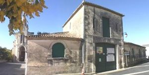
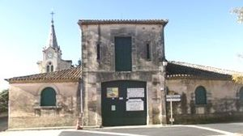
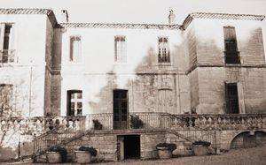
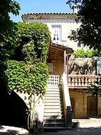
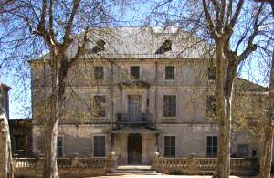
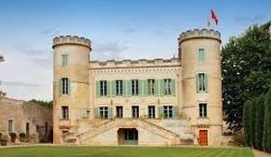
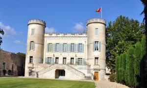
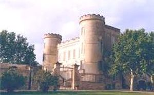
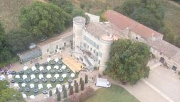

Recensement Jean-Claude Truffet
| Département | 34 — Hérault |
| Canton | Lunel |
| Commune | Vérargues |
| Type d'édifice | Château |
| Période d'origine | XVII |









Trois châteaux à Vérargues du XVIe siècle, de Devèze du XVIIIe siècle et celui de Pouget. DEVEZE, la seigneurie de la Devèze appartient au XVIIe siècle a une famille de Rochemore. Cette famille originaire de Lunel compta parmi ses membres un président a la cour des comptes de Montpellier, un conseiller du roi, En 1504, Pierre de Rochemore, juge royal de la ville et la Baronnie de Lunel, est seigneur de la Devèze. La famille exercera dès lors un pouvoir important sur le pays de Lunel pendant des décennies. en 1718 Guillaume seigneur de la Devèze né en 1724 . En 1743 il est fait état de deux châteaux à Vérargues, l'un appartenant à , V. Dupuis, l'autre à M, d'Alayrac . En 1768 il est fait mention de Guillaume Castaing de la Devèze. Au XVIIIe siècle elle appartient aux Castaing d'Alayrac, famille de conseillers à la cour des comptes de Montpellier. VERARGUES, la famille Coulondre vignerons de pères en fils, son origine remonte à : Gaston Coulondre (1857-1922) politicien de métier, il fut député de la circonscription dAvignon en 1902, réélu en 1906, il siégea à la commission de lagriculture puis en 1912, devint juge dinstruction à Marseille et maire de Vérargues pendant 14 ans. Il possédait dimportantes propriétés agricoles. Eric Coulondre né en1938, acquit le château et son prestigieux vignoble en 1968, il délaisse peu à peu la vente en gros et restructure le vignoble. Rodolphe Coulondre né en 1973, décide alors, à la fin de ses études, dépauler son père à la propriété. En 1993 il se tourne vers la vente directe au caveau et en 2001, il crée une société civile agricole avec ses frères et soeurs et en devient le gérant. POUGET, Yves Coulondre (1911-1972) épouse Claire Senglat, fille de négociant en vin en 1936. Ils avaient plusieurs propriétés sur la commune de Saint Laurent dAigouze, Saint Christol et Vérargues dont le château du Pouget. Place fortifiée appartenant à la commanderie des chevaliers de l'Ordre de Malte, puis rattaché à la baronnie de Lunel, donc à Louis duc de Nemours, comte d'Armagnac, et seigneur des lieux de Condé et de Lunel, le château du Pouget Transformé en hôtel restaurant
DEVEZE, elle fut la résidence des Rochemore, famille originaire de Provence, installée dans la région depuis le XVe siècle. . Aujourd'hui la S.C.E.A.(Société Civile d'Economie Agricole) du domaine est organisé autour d'une complémentarité familiale. Devèze quadrangulaire à trois niveaux avec pavillons carrées en angles. Façades et toitures (y compris la terrasse avec son escalier) et le salon avec son décor de gypseries: inscription par arrêté du 13 novembre 1974 Le château de Vérargues, très simple, est formé d'un corps de bâtiment principal de plan rectangulaire cantonné au sud de deux petits pavillons en léger décrochement et au nord corps de bâtiment de deux ailes en retour.
Le château fait aujourd'hui parti d'une exploitation agricole, il est entouré de diverses constructions utilitaires modernes. Les deux ailes au nord (peut-être les communs) ne présentent plus un grand intérêt. Un escalier d'accès a été construit. Pouget vous offre lauthenticité et lélégance dune demeure de charme familiale, édifié aux environs du XVIIIe siècle sur les fondations dun site romain Entre Nîmes et Montpellier, se dresse ses deux tours au coeur du vignoble languedocien. Place fortifiée appartenant à la commanderie des Chevaliers de l'Ordre de Malte, situé à Saint-Christol, à quelques centaines de mètres au nord de Vérargues, le château du Pouget est doté d'un magnifique parc de 15000m² ou vous pourrez admirer ses arbres tri centenaires.
Famille de Gaston Coulondre
"
Vérargues , de Devèze et de Pouget.